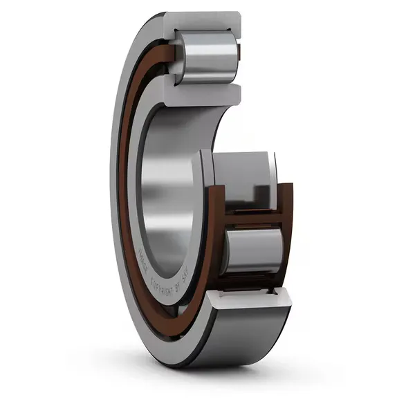

Premium Bi-Directional Locating Bearings Engineered to ISO Standards for High-Load Fixed Shaft Applications.
As a trusted industrial distribution partner, Swaraj Bearing Company provides high-precision NUP Series Cylindrical Roller Bearings engineered to support extreme radial forces while simultaneously offering structural stability. Catering to major industrial hubs across India—from fast-growing mechanical sectors in Maharashtra and Gujarat to high-capacity processing operations in Odisha and Jharkhand—we keep manufacturing lines moving with expansive multi-series inventory and expedited dispatch.
The signature mechanical layout of the NUP configuration centers on its dual-directional locating capability: it is designed with two integral ribs on the outer ring, a fixed single rib on the inner ring, and a loose thrust collar (loose rib ring). This specific engineering integration enables the bearing to act as a definitive "fixing" or locating component, anchoring the rotating shaft tightly and absorbing light bi-directional thrust loads. It provides an effective mechanism for assemblies prone to alternating horizontal thrust forces, ensuring precise shaft tracking without compromising operational alignment. If you are sourcing a heavy-duty bearing nup configuration, selecting the exact dimensional tolerance is critical to preventing premature component fatigue.

Integrating an nup bearing delivers distinct operational safeguards designed specifically for fixed-end machinery configurations:
Built with an integrated two-rib outer ring, a single-rib inner ring, and a separate flange washer, this design splits the mechanical load evenly. The loose collar simplifies system adjustments, allowing field engineers to maintain strict mounting clearances across complex drivetrains.
The combination of the inner ring's fixed rib and the loose thrust collar safely controls small, alternating axial displacements. This dual-direction restraint prevents internal machine friction from building up during fluctuating cycle loads.
Transitioning away from ball-point contacts, these solid cylindrical rollers deliver expansive surface tracking against the hardened raceways. This wide distribution path ensures superior structural stiffness and long component lifespans under sustained peak stress.
Precision-honed internal tolerances minimize drag between the roller ends and guide flanges. By mitigating localized heat generation, these units operate quietly and dependably inside fast-turning industrial gearboxes and critical pump assemblies.
| Parameter | Specification |
|---|---|
| Bearing Type | NUP Series Cylindrical Roller Bearings (Fixed/Locating Design) |
| Load Type | Heavy Radial Loads + Light alternating bi-directional Axial Loads |
| Design Variant | Two ribs on outer ring, one rib on inner ring + loose thrust collar |
| Cage Options | Glass-Fiber Reinforced Polyamide (E-Type) / Machined Solid Brass (M) |
| Material | Premium High-Carbon Chromium Bearing Steel (SAE 52100) |
| Internal Clearance | Standard (CN) / C3 / C4 (High-Temperature Clearance) |
| Precision Grade | Standard ISO P0 / High-Precision P6 & P5 |
| Lubrication | Open design optimized for circulating oil or specialized bearing grease |
To safeguard your machinery from unexpected breakdown expenses, we source and distribute only genuine, certified global brands manufactured to absolute international protocols. Our inventory includes ZVL Slovakia, offering high-tier European engineering delivering strict compliance with ISO boundary dimensions and exceptional metallurgy, along with SKF, FAG, NSK, and NTN, leading global brands for ultra-precision arrays and high-stress industrial applications. Note: Every shipment arrives with official manufacturer certifications, 100% batch traceability, and full compliance documentation.
The NUP Series Cylindrical Roller Bearings are available in standard, reinforced, and heavy brass cage options to meet precise mechanical specifications. Our inventory spans the entire dimensional spectrum to ensure immediate dispatch for critical breakdown replacement demands. Whether your application requires a standard replacement like the nup 207 bearing for light-duty electric motors, a wider nup 2206 bearing for pump assemblies, or a heavy-duty nup 306 bearing for high-torque gearboxes, we maintain deep stock levels across all major series.
Open-faced configuration for continuous lubrication via oil baths, perfectly supporting radial configurations while anchoring alternating axial drift.
Features optimized internal geometries and an increased roller volume, yielding substantially higher dynamic load ratings for intense operational environments.
Roller-guided machined brass cages engineered to withstand extreme vibrations, heavy shock loads, and high operational temperatures.
Below is the availability matrix across standard dimensional series matching factory profiles:
| Dimensional Series | Configuration Type | Available Model Ranges (Covered in Stock) |
|---|---|---|
| NUP 200 Series (Light) | Polyamide / Brass / E-Design | NUP207 to NUP220, NUP222, NUP224, NUP226, NUP228, NUP230 to NUP240, NUP244 |
| NUP 300 Series (Medium) | Polyamide / Brass / E-Design | NUP307 to NUP320, NUP321, NUP322, NUP324, NUP326, NUP328, NUP330 |
| NUP 400 Series (Heavy) | Standard / Machined Brass | NUP408 to NUP420, NUP422 |
| NUP 2200 Series (Wide) | Polyamide / Brass / E-Design | NUP2207 to NUP2218, NUP2220, NUP2222, NUP2224, NUP2226, NUP2228, NUP2230 |
| NUP 2300 Series (Heavy-Wide) | Polyamide / Brass / E-Design | NUP2308 to NUP2320, NUP2322 |
Our NUP Series bearings are widely integrated by equipment manufacturers and maintenance engineers across critical heavy-duty infrastructure settings:
Precision-ground variants like the nup 208 bearing and nup 209 bearing are heavily utilized on the fixed end of high-torque gear shafts to contain axial forces from helical gears while handling extreme radial stress.
Installed to keep the impeller shaft securely positioned against multi-directional hydraulic thrust.
Ideal for large-scale motors operating on vertical axes or under structural belt loads requiring rigid axial alignment.
Deliver precise rotational tracking and vibration control in high-speed rotary screw and centrifugal air compressors.
Ensure high-rigidity processing alignment and zero horizontal play in heavy-duty milling and industrial manufacturing centers.
At Swaraj Bearing Company, quality is an unyielding structural standard. As a recognized authorized distributor for ZVL Slovakia, we guarantee 100% authentic products sourced directly from production lines, eliminating counterfeit risks through full factory certification and complete batch traceability. Every NUP Series bearing we supply complies strictly with international metrics, including ISO 15 for outer boundary dimensions, ISO 281 for dynamic load calculations, and ISO 76 for static load configurations.
By utilizing premium-grade carbon-chromium steel, our bearings ensure long-term resistance against wear under severe operational stresses. For specialized applications operating in intense thermal zones, all configurations can be requested with custom heat stabilization treatment to safely exceed 120°C without dimensional distortion. Our structured verification process guarantees that your procurement team receives high-tier components that optimize machinery runtime and lower lifetime maintenance overheads.
Every shipment arrives with official manufacturer certifications, 100% batch traceability, and full compliance documentation.
Swaraj Bearing Company supplies genuine NUP Series Cylindrical Roller Bearings through authorized sourcing channels. As an authorized distributor of ZVL Slovakia and a trusted partner for leading global brands, we ensure ready stock availability, proper documentation, and timely pan‑India dispatch for heavy-duty industrial applications.
Every component sourced directly from authorized manufacturers with full batch traceability.
Ready stock and timely dispatch across India for urgent and bulk requirements.
Flexible supply models tailored for OEMs, industrial clients, and bulk distributors across India.
Decades of expertise in bearing procurement, supplier evaluation, and technical product analysis.
Our team is always available for part identification, sizing, and procurement guidance.
Official authorization from ZVL Slovakia with full OEM documentation and batch certification.
Swaraj Bearing Company provides real-time stock availability, competitive volume pricing, and dedicated logistics support across all major industrial hubs to minimize your facility's downtime. Our engineering team stands ready to assist your procurement departments with technical cross-referencing, bulk scheduling, and customized clearance specifications. Contact our sales desk today to request an instant quote and secure genuine, high-performance components for your machinery.